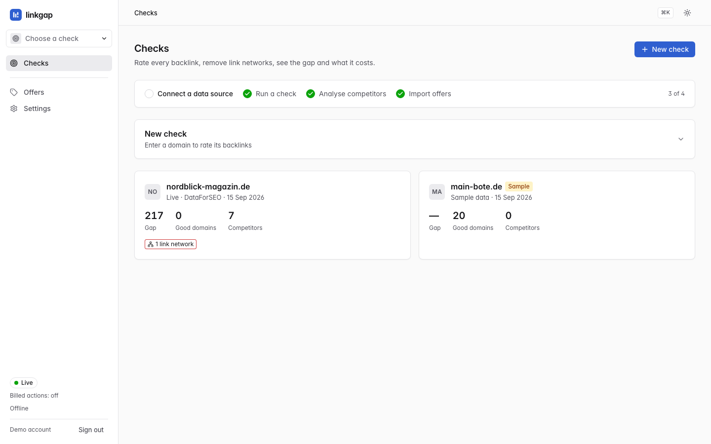
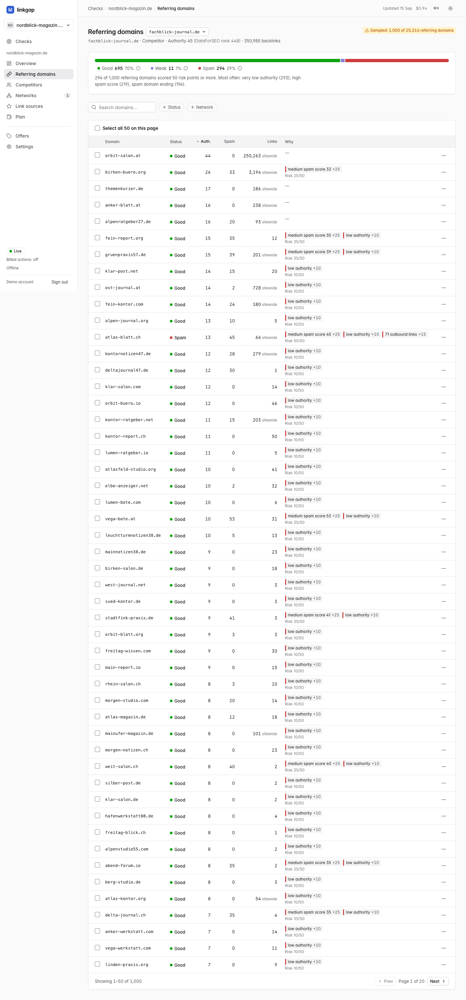
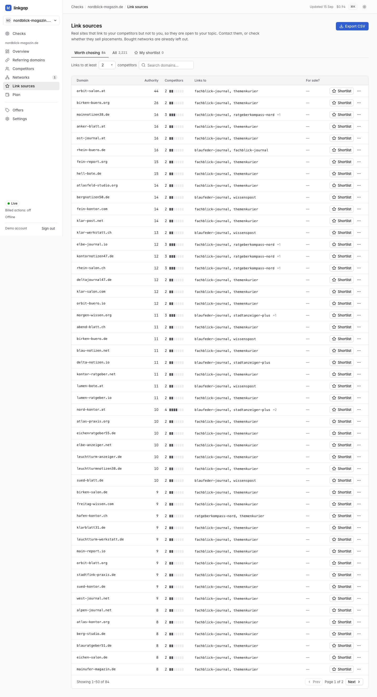

Early Access · neu und im Aufbau
Wie weit du bei Backlinks wirklich hinten liegst. Und was das Aufholen kostet.
Backlinks sind Links von anderen Websites auf deine, und Google wertet sie ungefähr wie Empfehlungen. linkgap rechnet gekaufte Linknetzwerke und Spam aus den Zahlen deiner Konkurrenz heraus. Dann siehst du, wie groß der Abstand wirklich ist, wo du gute Links herbekommst und was das Aufholen zu echten Marktplatzpreisen kostet.
Für SEO-Freelancer und kleine Agenturen, die Links kaufen und das Budget beim Kunden begründen müssen.
Kostenlos, solange der Early Access läuft. Jedes Konto wird von Hand freigeschaltet, weil jede Analyse echtes Geld für Daten kostet. Nach der Freischaltung hast du 3 US-Dollar Guthaben, das reicht für etwa drei komplette Analysen. Bis dahin kannst du dir ein vollständiges Beispielprojekt ansehen. Die App selbst ist bisher nur auf Englisch.
-
546217 gute verweisende Domains beim typischen Wettbewerber, vor und nach dem Herausrechnen eines gekauften Netzwerks - 364 Domains in einem einzigen Linknetzwerk, das sich drei Wettbewerber geteilt haben
- 2.221 echte Linkquellen: Domains, die auf die Konkurrenz verlinken, aber nicht auf diese Website
Ein anonymisierter echter Fall: eine neue Website ohne einen einzigen Backlink, dazu sieben Wettbewerber. Die Domainnamen in den Screenshots sind erfunden.
![Die Übersicht in linkgap für nordblick-magazin.de: 217 gute verweisende Domains Rückstand auf den typischen Wettbewerber, daneben durchgestrichen die 546, die es vor dem Herausrechnen eines Linknetzwerks mit 364 Domains waren. Vier Kacheln zeigen deine guten Domains (0), den typischen Wettbewerber (217), Linknetzwerke (364 Domains) und die Kosten fürs Aufholen: rund 10.500 €, weil etwa 80 gekaufte Links die Linkstärke seiner 217 Domains erreichen. Darunter ein Balkendiagramm, das sieben Wettbewerber mit einer gestrichelten Medianlinie bei 217 vergleicht.](../img/overview-dark.png)
Vieles in einem Backlink-Profil zählt gar nicht.
Backlink-Tools zählen Links. Viele davon wurden im Paket gekauft oder sind schlicht Spam, und Google ignoriert sie höchstwahrscheinlich. Zählst du sie trotzdem mit, wirkt die Konkurrenz weiter vorn, als sie ist, und das Budget, das du beim Kunden ansetzt, fällt zu hoch aus.
Beim Marktführer war fast jede dritte Domain Spam
In einer Stichprobe von 1.000 verweisenden Domains beim Marktführer stufte linkgap 294 als Spam ein. Hinter jeder Einstufung steht eine Regel mit Punktwert, und die siehst du direkt in der jeweiligen Zeile.
Drei Wettbewerber teilten sich ein gekauftes Netzwerk
364 kleine Websites ohne thematischen Bezug, die auf genau diese drei Wettbewerber verlinkten und auf keine andere Seite, die wir analysiert haben. So sieht ein gekauftes oder eingeschleustes Linkpaket aus.
Der ehrliche Abstand lag also bei 217, nicht bei 546
Eine um 60 % kleinere Lücke und ein entsprechend kleineres Budget. Mit dieser Zahl kannst du zum Kunden gehen.
Wofür du es nutzen kannst.
Ein Linkbuilding-Angebot kalkulieren
Wie viele Links, zu welchen echten Angebotspreisen, für wie viel Geld. Noch bevor der Kunde danach fragt.
Die echte Lücke sehen
Welche Links der Konkurrenz gekauft oder Spam sind. Dann rennst du keiner Zahl mehr hinterher, die nie gestimmt hat.
Echte Linkquellen finden
Websites, die auf mehrere deiner Wettbewerber verlinken, aber nicht auf dich. Als CSV.
Auch nützlich
Für eine neue Website, die bei null anfängt
Du zahlst aus eigener Tasche, also muss sich jeder Link lohnen. Der Plan zeigt, welche Links am Anfang am meisten bringen und ab wann der Effekt abflacht. Diese Kurve ist ein Modell, keine Ranking-Prognose.
Für den Warenkorb auf dem Linkmarktplatz, bevor du bezahlst
Importiere die Angebote eines Portals und lass linkgap sie durchrechnen. Angebote, deren DR weder zum Traffic der Website noch zum Preis passt, werden markiert und aussortiert. So zahlst du nicht für einen aufgeblasenen Wert.
Vier Schritte: prüfen, bereinigen, vergleichen, planen.
Jede Ansicht beantwortet eine Frage, mit Zahlen, die du nachprüfen kannst.
-
Prüfen
Gib deine Domain ein. linkgap holt deine Backlinks und schlägt Wettbewerber vor, die für dieselben Suchbegriffe ranken. Einen eigenen Datenzugang brauchst du nicht: Die Abfragen laufen über linkgap und gehen von deinem kostenlosen Guthaben ab. Am Ende steht eine Kachel mit der Lücke, deinen guten verweisenden Domains, der Zahl der analysierten Wettbewerber und einer Warnung, falls ein Linknetzwerk im Spiel ist. Beispielprojekte sind mit „Sample“ gekennzeichnet, damit erfundene Zahlen nie zwischen echten landen.

-
Bereinigen
Jede verweisende Domain wird als gut, schwach oder Spam eingestuft, nach Regeln, die du nachlesen kannst: Spam-Score, sehr niedrige Autorität, Zahl der ausgehenden Links, spammige Ankertexte, kaputte Links. Fährst du mit der Maus über einen Grund, siehst du, wie viele Punkte er gebracht hat und wo die Schwelle liegt. Anderer Meinung? Dann änderst du die Einstufung für eine Domain oder für viele auf einmal und kannst das jederzeit rückgängig machen.

-
Vergleichen
Sind Spam und Netzwerke raus, sagt der Vergleich endlich etwas aus: wie viele gute verweisende Domains dir zum typischen Wettbewerber fehlen, zum Schnitt der Top 3 oder zum Marktführer. Die zweite Hälfte der Antwort ist die Liste der Linkquellen: jede gute Domain, die auf mindestens zwei Wettbewerber verlinkt, aber nicht auf dich. In diesem Fall waren das 2.221 Quellen, 84 davon so stark, dass du mit ihnen anfangen solltest. Die Liste exportierst du als CSV.

-
Planen
Leg ein Budget fest. linkgap wählt aus echten Marktplatzangeboten, entweder die günstigsten zuerst oder die mit dem besten Preis-Leistungs-Verhältnis, lässt Domains weg, die schon auf dich verlinken, und weist Aufschläge und Texterstellung in eigenen Spalten aus. Die Summe ist also das, was du tatsächlich zahlen würdest. In diesem Fall gab es für ein Budget von 1.500 € elf Links zum Preis von 1.388,58 €. Was das bringt, steht weiter unten.


Linknetzwerke
Das Netzwerk aus 364 Domains, das sich drei Wettbewerber geteilt haben.
Ein Linknetzwerk ist eine Gruppe von Websites, die nur dazu da sind, Links weiterzugeben. Verkauft wird so etwas meist im Paket. Hier verlinkten 364 Websites ohne thematischen Zusammenhang auf dieselben drei Wettbewerber und auf niemanden sonst, den wir analysiert haben. Dazu kamen immer wieder exakt dieselben Autoritätswerte: 83 Websites hatten Autorität 51, 50 hatten 23, 25 hatten 79. Bei echten Websites kommt so eine Häufung exakt gleicher Werte kaum vor. linkgap markiert die Gruppe, zeigt die Belege und zählt sie nicht mehr mit.
Warum es markiert wurde
- Verlinkt nur diese drei
- Jede der 364 Domains verlinkt auf mindestens zwei der drei Wettbewerber und auf keine andere analysierte Website.
- Auffällig gleiche Werte
- Immer wieder dieselben Autoritätswerte: 51 ×83, 23 ×50, 79 ×25.
- Sehr niedrige Autorität
- Im Median Autorität 2 von 100.
- Themenfremd
- Nur 46 der 364 Domainnamen haben überhaupt ein Wort mit den Namen der Wettbewerber gemeinsam.
- Marken- oder leere Ankertexte
- 65 % der Links haben gar keinen Ankertext oder nur den Namen der Website, auf die sie zeigen.
Was das ausmacht
Gute verweisende Domainsvorher → nachher
wissenspost.de546→ 203blaufeder-journal.de491→ 217stadtanzeiger-plus.de635→ 477- Typischer Wettbewerber
546→ 217
Bei einem Wettbewerber machte das Netzwerk fast zwei Drittel des Profils aus. Das ist ein Muster, kein Beweis. Ein Klick auf Not a network („kein Netzwerk“) nimmt diese Domains wieder in alle Zählungen auf, und auch das lässt sich rückgängig machen.

Was dir ein Budget bringt.
Bei einer neuen Website bringen die ersten Links am meisten, jeder weitere etwas weniger. linkgap gewichtet Links nach Autorität, statt sie nur zu zählen. Deshalb kann ein starker gekaufter Link mehrere der schwachen aufwiegen, die hinter der Zahl eines Wettbewerbers stecken. Die Angaben zur Wirkung stammen aus einem Modell und sind keine Ranking-Prognose.
- 10 Links bringen für rund 1.100 € schon 63 % der geschätzten Wirkung (Modell, keine Ranking-Prognose)
- 11 Links für 1.388,58 € bei 1.500 € Budget: 63,6 % des Wegs zur Linkstärke des Wettbewerbers (Modell)
- rund 80 gekaufte Links für rund 10.500 € reichen, um seine Linkstärke ganz zu erreichen. Nicht 217.
- Echte Preise. Die Angebote kommen aus dem Katalog von Collaborator.pro oder aus dem CSV-Export eines beliebigen Portals. Aufschläge für sensible Themen und Kosten für die Texterstellung stehen in eigenen Spalten.
- Keine aufgeblasenen Werte. Angebote, deren DR weder zum Traffic der Website noch zum Preis passt, werden markiert und fliegen aus dem Plan.
linkgap verkauft keine Links. Warum rund 80 und nicht 217: Die Domains hinter der Lücke sind überwiegend schwach (Autorität im Median 1 von 100), die Angebote hier haben im Schnitt DR 49,7. Im Modell wiegt ein solches Angebot etwa 2,7 dieser schwachen Domains auf.
Woher die Daten kommen und wohin deine gehen.
Die Backlink-Daten kommen von DataForSEO, die Linkpreise von Collaborator.pro, beides über die eigenen Konten von linkgap. Du brauchst bei keinem der beiden ein Konto und siehst jederzeit, wie viel von deinem Guthaben noch übrig ist.
DataForSEO
Backlinks, verweisende Domains, Wettbewerber und Spam-Score. Den Rank von 0 bis 1000 zeigt linkgap überall als Autorität von 0 bis 100.
Collaborator.pro
Linkangebote aus dem Katalog, damit der Plan mit dem rechnet, was Platzierungen wirklich kosten.
CSV-Import
Angebote aus dem Export eines beliebigen Portals. Pflicht sind nur zwei Spalten: Domain und Preis.
Semrush, Ahrefs, Moz, Majestic
In der App schon beschrieben, damit du sie einplanen kannst. Angebunden sind sie noch nicht, und das steht in der App auch so.
- Keine Kostenfallen. Jede Aktion, die Daten verbraucht, zeigt vorher, was sie ungefähr kostet. Passt ein Check nicht mehr in dein Restguthaben, wird er abgelehnt, bevor auch nur eine Anfrage rausgeht. Beispielprojekte kosten nichts.
- Gehostet in Frankfurt. Deine Projekte sind nur in deinem Konto sichtbar. Passwörter liegen nicht im Klartext vor, sondern als gesalzene scrypt-Hashes, und Sessions laufen ausschließlich über HTTPS.
- Kein Tracking hier. Diese Seite nutzt kein Analytics-Tool und lädt nichts von fremden Servern.
Was linkgap nicht ist.
Die App nimmt es mit ihren eigenen Zahlen genau, also nimmt es diese Seite mit der App genauso genau.
-
Nicht sofort für alle offen
Jeder Check kostet echtes Geld für Daten, deshalb wird jedes neue Konto von Hand freigeschaltet. Einloggen kannst du dich direkt nach der Registrierung, bis zur Freischaltung ein Beispielprojekt ausprobieren, und die App zeigt dir, sobald du drin bist.
-
Early Access, noch nicht fertig
linkgap kann, was diese Seite zeigt. Abseits davon hakt es noch an der einen oder anderen Stelle. Wenn dir etwas auffällt, sag Bescheid, dann kommt es auf die Liste.
-
Große Profile werden per Stichprobe erfasst
Beim Marktführer in diesem Fall wurden 1.000 von 25.216 verweisenden Domains abgerufen. Solche Zahlen sind in jeder Ansicht als Schätzung gekennzeichnet.
-
Kein Outreach-Postfach, kein Rank-Tracking
Keine E-Mail-Sequenzen, kein CRM. Am Ende stehen eine Shortlist, ein Plan und ein Export.
-
Die App gibt es (noch) nur auf Englisch
Diese Seite gibt es auf Deutsch, die App selbst bisher nur auf Englisch. Das Glossar unten übersetzt die Begriffe, die dir dort begegnen.
Begriffe, die dir in der App begegnen.
Was sie bedeuten und wie sie in der englischen App heißen.
- Verweisende Domains in der App: referring domains
- Die verschiedenen Websites, die auf eine Seite verlinken. Zehn Links von derselben Website zählen als eine verweisende Domain.
- Autorität und DR in der App: Authority, DR
- Autorität ist ein Stärkewert von 0 bis 100 für eine Website, berechnet aus den Daten von DataForSEO. DR (Domain Rating) ist ein ähnlicher Wert, mit dem Linkportale ihre Angebote bewerben. Beide hängen zusammen, sind aber nicht dasselbe.
- Typischer Wettbewerber in der App: median
- Der Wettbewerber in der Mitte, wenn man alle der Größe nach sortiert. Ein einzelner Riese oder Winzling verzerrt diesen Wert nicht.
- Hochgerechnet in der App: sampled
- Bei sehr großen Profilen wird nur ein Teil abgerufen und die Gesamtzahl daraus geschätzt. linkgap kennzeichnet das immer.
- Linkstärke in der App: link strength, link value
- Links nach Autorität gewichtet statt einfach gezählt. So wiegt eine starke Website mehrere schwache auf.
- Geschätzte Wirkung in der App: Estimated effect (model)
- Wie nah dich eine Auswahl an Links an die Linkstärke eines Wettbewerbers heranbringt, auf einer Kurve, bei der die ersten Links am meisten zählen. Ein Modell, keine Ranking-Prognose.
Fragen
Verstößt Linkkauf nicht gegen Googles Regeln?
Googles Spam-Richtlinien werten gekaufte Links, die das Ranking beeinflussen sollen, als Linkspam. linkgap nimmt gekaufte Netzwerke aus der Zählung, verkauft selbst keine Links, verspricht keine Rankings und plant nur mit Angeboten, deren DR zu Traffic oder Preis passt. Die Liste der Linkquellen hilft genauso, wenn du dir Links lieber verdienen als kaufen willst. Ob und wie du Links aufbaust, entscheidest du.
Ahrefs und Semrush haben doch schon ein Gap-Tool. Wozu das hier?
Die listen die Links auf. linkgap zeigt, welche davon wirklich zählen und was es kostet, diese aufzuholen. Nutz ruhig beides.
Warum muss ich warten?
Jedes Konto wird von Hand freigeschaltet, weil jeder Check echtes Geld für Daten kostet. Bis dahin kannst du dir ein vollständiges Beispielprojekt ansehen, kostenlos. Fragen gern an seeberger.solutions@gmail.com, auch auf Deutsch.
Was kostet das?
Während des Early Access nichts. Jedes freigeschaltete Konto bekommt 3 US-Dollar Datenguthaben. Eine Website plus sieben Wettbewerber haben bei einem echten Durchlauf 0,94 US-Dollar gekostet, das Guthaben reicht also für etwa drei komplette Analysen. Ein einzelnes Profil kann nie mehr als 0,27 US-Dollar kosten. Beispielprojekte sind kostenlos. Kostenpflichtige Tarife kommen, die Preise stehen aber noch nicht fest.
Welche Datenquellen nutzt linkgap?
DataForSEO für Backlinks und Collaborator.pro für Linkangebote, beides über linkgaps Konten. Angebote aus anderen Portalen kommen per CSV-Import rein. Semrush, Ahrefs, Moz und Majestic folgen später, angebunden sind sie noch nicht.
Was kann ich exportieren?
Die Linkquellen exportierst du als CSV. Den Spam, der auf deine eigene Website zeigt, bekommst du als einfache Textdatei, etwa als Grundlage für eine Disavow-Datei. Übersicht und Plan lassen sich als sauberes PDF drucken, das du direkt an einen Kunden weitergeben kannst.
Wer sieht meine Daten?
Deine Projekte sind nur für dich sichtbar, für alle anderen Konten existieren sie schlicht nicht. Passwörter liegen als gesalzene scrypt-Hashes vor, Sessions laufen nur über HTTPS, und die App läuft in Frankfurt. Auf dieser Seite gibt es weder Analytics noch Tracking.
Neu und im Aufbau
Von einer Person gebaut, von den ersten Nutzern mitgeprägt.
linkgap ist neu. Ein Gründer entwickelt und betreibt es allein, von Deutschland aus. Deine Nachricht landet direkt bei dem, der auch den Code schreibt, und dein Feedback entscheidet mit, was als Nächstes gebaut wird.
Finde heraus, wie weit du wirklich hinten liegst.
Jedes Konto wird von Hand freigeschaltet. Danach hast du 3 US-Dollar Guthaben, genug für etwa drei komplette Analysen.